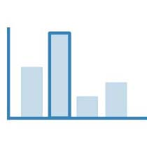

PMC Research
Research into the effects of firing times on the physical characteristics of polymer metal clays
Overview
This project initially started from an innovative
material idea related to fibre optics. I had prototyped a method of
using fibre optics that had been altered and woven amongst normal
fabric, in order to create an illuminating textile.
However early prototypes and discussions with a variety of
demographics, a more prevalent issue arose; not all cyclists indicate
when turning, and in the UK the majority of accidents occurred at or
approaching a junction.
As a result the focus of design shifted to target their behaviour,
and design a product that created better communication between
cyclists and other road users.
My Role: Researcher and Designer
The Starting Point
The project originally started looking at fibre optics: by opening the outer layer of a fibre optic cable up, light is allowed to escape along the length. This then lead on to trying to weave with the fibre optics and see how it can be applied.
How to use it
Prototyping is great but there always needs to be an application for an idea, at the very least to drive
the design in the right direction early on.
Around this time I had read a news story on a cyclist who had died as a result of a traffic collision,
and so I began to research this issue further to see what the contex was.
The initial focus was on the quanititive data on cycling in the UK. There were a number of studies available which provided an overview, especially with cycling on the rise, it was becoming a lucrative industry in the UK. Three statistics clearly stood out:
53%

Of the London population claimed to cycle
19,000

Accidents involving cyclists occured across the UK in 2012
2/3
of accidents occured at or approaching a junction, with the biggest reason being the motorist "Looked but didn't see"
Mintel 2013, ROSPA 2013